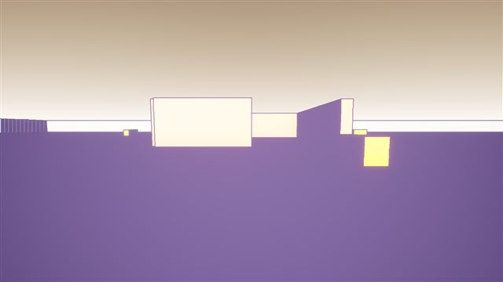
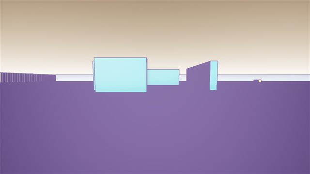
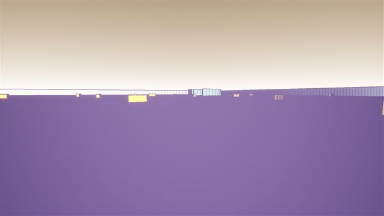
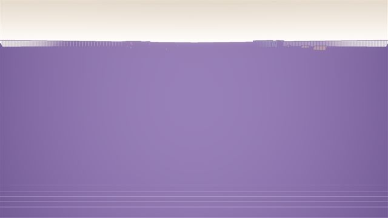

progress_media/) bij en pusht het mee met de repo.git pull en ververst dit tabblad (F5) — dat is alles.Open: CI-runner · concept-art-stukken 0/10 · feel-referentieclips 0/5.
Alle 8 specs + live speelbare loop af. Open: gate-vraag “spelen testers vrijwillig een 2e loop?” — beslissing van de eigenaar. Audio-polish is forward-infra.
Alleen art-richting gelockt + outline-materiaal.
Stance-stub: gedrag volgt.
Damage via GameplayEffects volgt.
Feel-pass in Phase 2.
Perception-stub; patrouilles en archetype-variatie later.
Bewust debug-grade.
Milestone gebankt: schemer-twee-tonen + outlines; SM5-limieten gedocumenteerd, herkalibratie op RTX.
Eerste vegetatie pas in Phase 3 (planeet Sylvaris).
Phase 2 → 3.
Wacht op de RTX-PC; deze laptop kan het niet — SM5-fallback.
Verhuisd naar Content/Audio/Generated — cache reist mee met de repo (16.12).
PlayLine (asset → cache-wav → genereren) af; eerste run tegen de live API nog te doen.
Bulk-commandlet importeert .wav als USoundWave en koppelt + saved het DataAsset.
-run=EclipseGenerateVoices; zonder API-key een nette cache-only run.
Gedocumenteerd.
1 graybox-district van Kessara.
Docs 00–17 staan.




Let op: de belichtings-debug loopt nog — beelden kunnen ruw of fout ogen. Dit dashboard toont bewust de eerlijke stand.